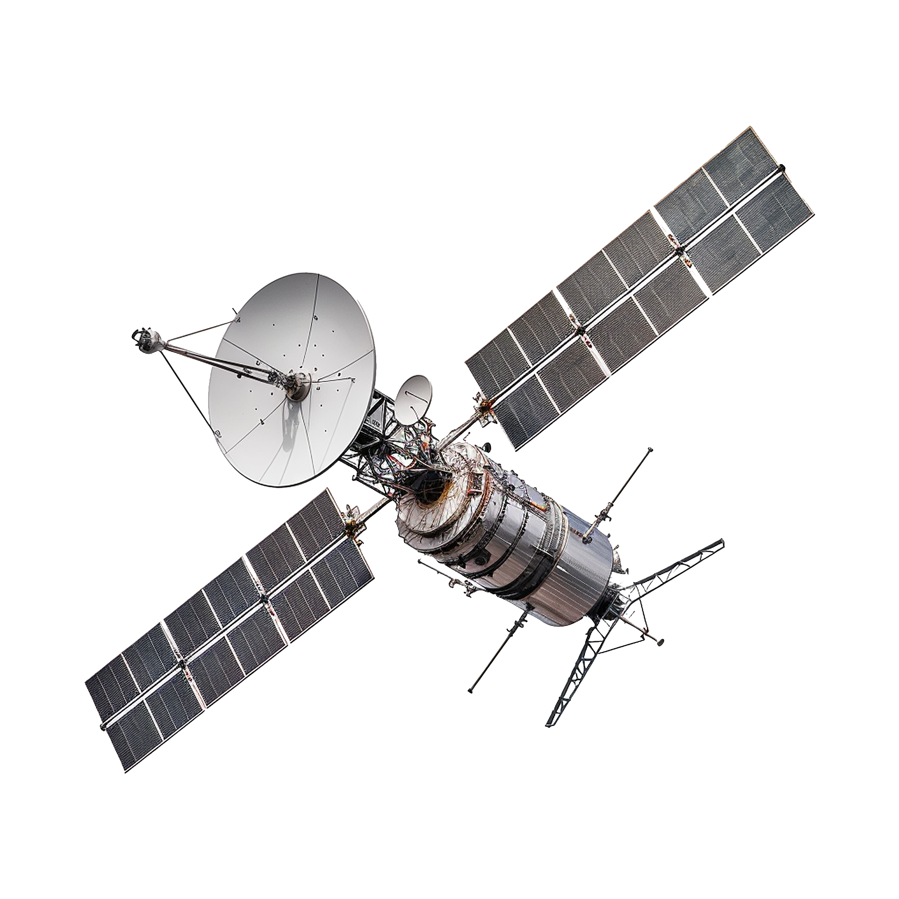

Explore astronomy in a fun, futuristic way.
Where satellites orbit close to Earth. Great for weather and imaging.
Satellites stay above the same point on Earth. Perfect for communications.
Beyond Earth’s orbit — where probes explore planets and galaxies.

Exploring Earth’s orbit and beyond. Satellites help us understand weather, climate, communication, and the mysteries of deep space.
Journey beyond Earth’s orbit and discover stars, nebulae, planets, and the mysteries of deep space. The universe is vast — let’s explore it together.
Learn how to find constellations and planets with just your eyes and curiosity.
Discover what type of telescope suits beginners and how to use it effectively.
Capture the night sky with simple techniques and affordable equipment.